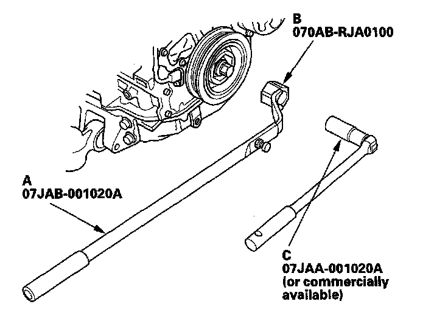
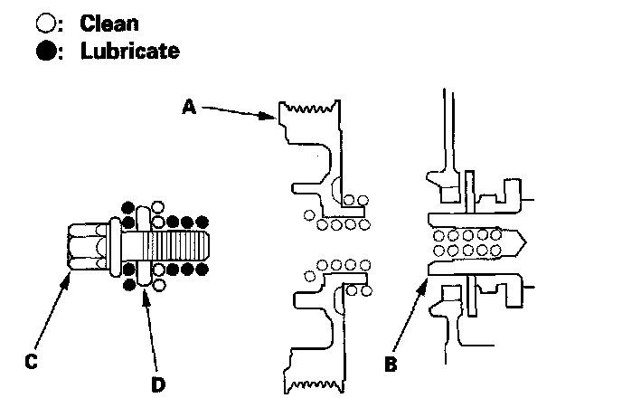
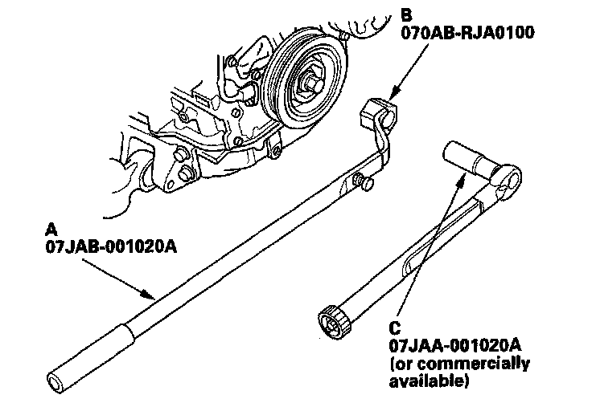

Harmonic Balancer - Crankshaft Pulley: Service and Repair
Crankshaft Pulley Removal and InstallationSpecial Tools Required
^ Holder handle 07JAB-001020A
^ Crankshaft pulley holder 070AB-RJA0100
^ Socket, 19 mm 07JAA-001020A or a commercially available 19 mm socket
Removal
1. Remove the front wheels.
2. Remove the splash shield.
3. Remove the drive belt.
4. Hold the pulley with holder handle (A) and holder attachment (B).

5. Remove the bolt with a 19 mm socket (C) and breaker bar, then remove the crankshaft.
Installation
1. Clean the crankshaft pulley (A), crankshaft (B), bolt (C), and washer (D). Lubricate as shown.

2. Install the crankshaft pulley, and hold the pulley with holder handle (A) and holder attachment (B).

3. Tighten the bolt to 49 N-m (5.0 kgf-m, 36 lbf-ft) with a torque wrench and 19 mm socket (C). Do not use an impact wrench.
4. Tighten the pulley bolt an additional 90°.
5. Install the drive belt.
6. Install the splash shield.
7. Install the front wheels.